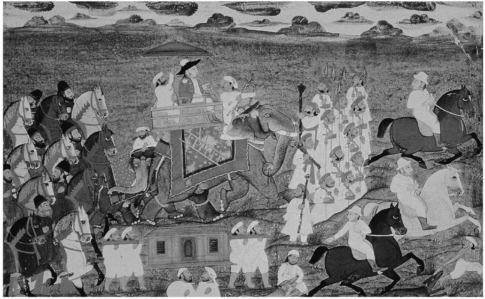

英国人到来之前，印度的村庄是相对恒定而自足的。但是，在探讨这些西方入侵者的影响之前，我们将考察他们为什么能在18世纪后期和19世纪期间不太费力地征服整个印度。这是一个重要的问题，因为在葡萄牙的阿尔布克尔克于16世纪初占领果阿之后的250年里，欧洲人仅能坚守沿海的少数根据地。然后，在短短数十年间，势力均衡决定性地改变了：整个印度次大陆受到英国的统治。
导致这一结果的一个原因是，莫卧儿的力量和权威已衰落（见第十八章第三节）。这使穆斯林军阀和地方总督能在各地区宣告独立、建立个人王朝。同时，信奉印度教的人通过组织一个将中心设在浦那城的强有力的马拉塔联盟来坚持自己的权利。马拉塔人赢得对整个德干高原的控制，然后，约1740年前后，开始侵入印度北部，打算取代正在衰落的莫卧儿人。因而，18世纪时，随着各种官员试图把自己的职位转变为世袭的诸侯权位，随着他们为了实现自己的野心而与印度或外国的任何势力私通，印度处于无政府状态。因而，英国人能够挑拨一个印度王公反对另一个印度王公，直到他们成为整个半岛的主人为止。这种情况全然不同于中国；在中国，清朝的结构仍然完整无损，从而迫使所有的外国人与北京的皇帝直接打交道。
大大地促使印度易受攻击的另一个重要因素是强大的商人阶级的兴起；这一商人阶级的经济利益与西方公司的经济利益有着密切关系。这些公司能比较自由地在印度经商（它们在中国几乎遭到完全的排斥）。16世纪时，印度的经济很少受到贸易的影响，因为贸易主要限于香料和纺织品。但是，17世纪时，除了硝石外，还有各种商业性作物如靛蓝、芥子籽和大麻被大量出口。孟加拉是这一贸易的中心。当时这里出现了富裕的本土商人，他们控制了当地经济，并在莫卧儿官员腐败、无能的统治下变得越来越不安分。这些商人中一个叫贾嘎特·塞特的人，收买了那些本该遵照孟加拉的“纳瓦布”——总督——的命令行事的将军的忠心。在普拉西战役中（1757年），这些将军避免与英国人作战；英国人在这场重大的遭遇战中仅死伤了75个人。正如一位印度历史学家所说的，普拉西是“一笔交易，而不是一场战斗”。
英国人这时是孟加拉的实际统治者，不过他们继续在形式上承认傀儡纳瓦布。1764年，东印度公司在击败莫卧儿军队之后，被授予“底瓦尼”，即在孟加拉、比哈尔和奥里萨这些富裕的地方征税的权利。这为谋取利润和露骨地敲诈提供了许多机会，英国代理人充分利用了这些机会。通过增加赋税、控制贸易和接受本土官员的许多“礼物”，他们为自己和在伦敦的上司积聚了财富。
由于在孟加拉的立足点，英国人得到了在印度进一步扩张所必需的基地和资源。他们开始向北推进，寻找天然边界。在东北面，在喜马拉雅山脉的尼泊尔，他们击败了廓尔喀人，后者从此以后站在英国人的一边战斗。同样，在西北面，他们最后战胜了旁遮普的高傲的锡克人。因而，到19世纪中叶，英国人成为整个印度的主人。

图217 一位印度艺术家所绘的詹姆士·托德（约1880年），他正乘坐一头皇室的大象走在仪仗队中。